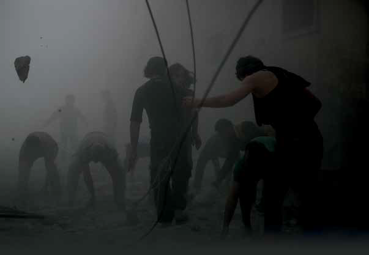

Aleppo, Syria. 30 May, 2016. Syrian regime forces have bombarded the districts in Aleppo. The neighbourhood of Al-Sukkari in Aleppo has been attacked. The attack resulted in the death of one child and six civilians. Since this morning, nearly twenty civilians in the Aleppo districts of Al-Shakur, Al-Almeria, Alkhalsa and Al-Haidarya have been killed with more than forty injured. Civil Defense workers have been looking for and rescuing the injured and removing the corpses from the debris.